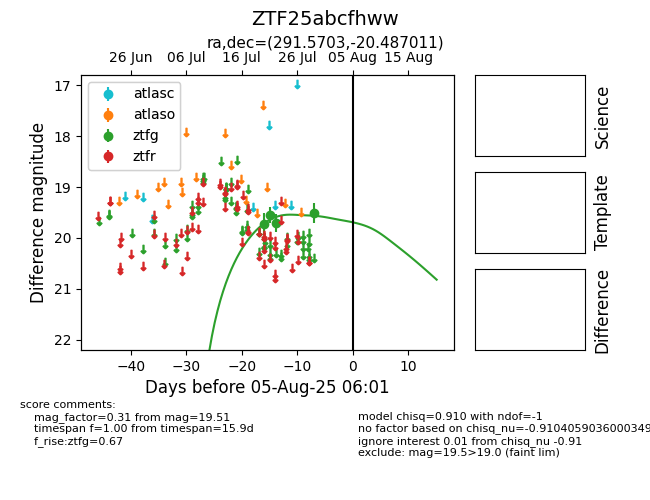

Target ZTF25abcfhww at 2025-08-05 06:01, see:
FINK: fink-portal.org/ZTF25abcfhww
Lasair: lasair-ztf.lsst.ac.uk/objects/ZTF25abcfhww
ALeRCE: alerce.online/object/ZTF25abcfhww
alt names
ZTF25abcfhww (ztf,fink)
coordinates:
equatorial (ra, dec) = (291.5703,-20.48701)
galactic (l, b) = (18.0073,-16.60990)
photometry
last ztfg=19.51
4 ztfg detections
